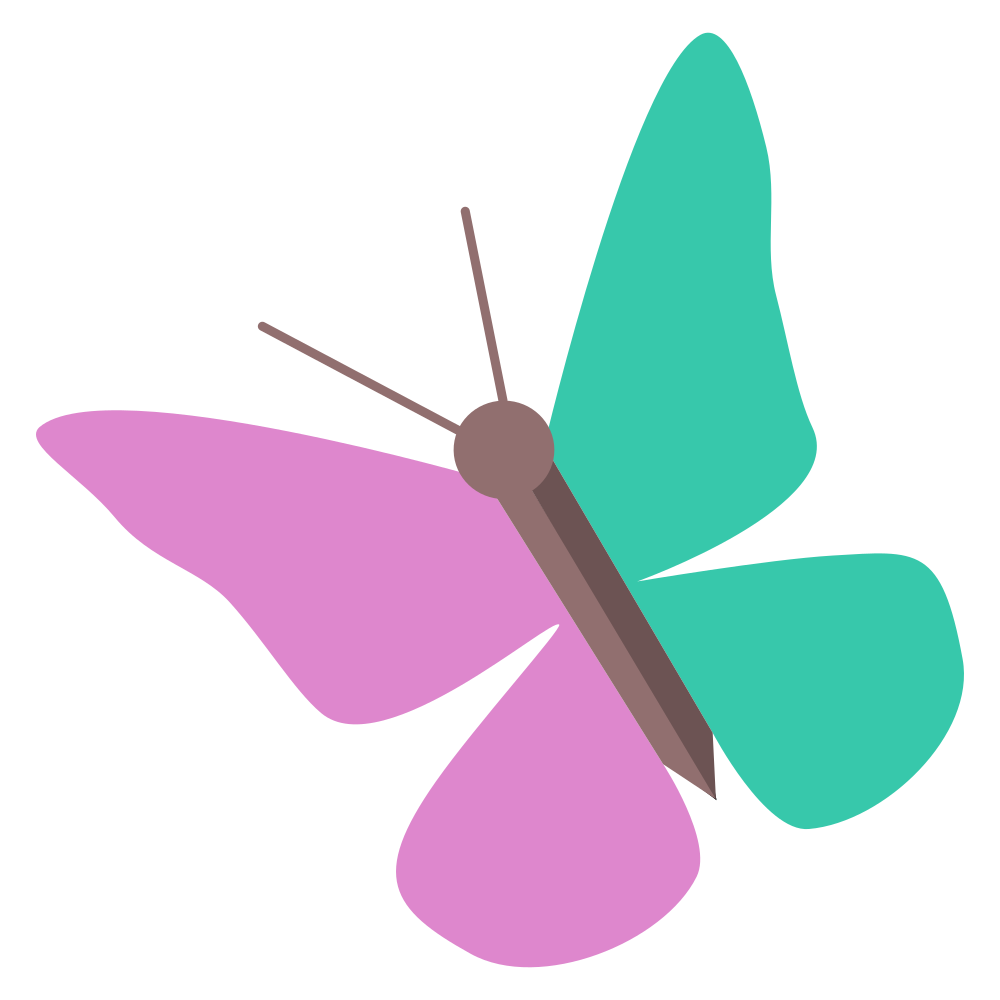

Hej.
Du är förmodligen här för att du känner, liksom vi, att politiken skulle kunna vara något annat. Något klokare, vänligare, mer levande. Inte bara ett spel om röster, utan ett verkligt försök att ta hand om varandra och den värld vi delar.
Vi är ett ungt parti, men vi bär på en gammal insikt: samhällen förändras inte genom ideologiska förklaringar – de förändras när vi tillsammans vågar tänka i system, testa idéer i verkligheten, och lyssna ödmjukt på vad som faktiskt fungerar.
Vi tror på en politik som andas. Som ställer hypoteser, inte ultimatum. Som vågar säga: “Vi vet inte allt – men vi lovar att lära oss tillsammans med er.” Det är inte svaghet. Det är ärlighet.
Vi börjar i Upplands Väsby. Inte för att det är det enda stället som behöver förändring – utan för att äkta förändring måste börja någonstans, och vi börjar där vi är. Här vill vi skapa ett levande laboratorium för en ny sorts styrning: tillsammans med invånare, med öppna kort, och med genuint nyfikenhet på vad som faktiskt fungerar.
Det som fungerar sprider vi. Det som inte fungerar lär vi oss av. Inga tomma löften – bara verkliga resultat, upptäckta tillsammans.
Fjärilen är vår symbol av en anledning: förvandling tar tid, sker inifrån, och kräver modet att helt gå in i processen. Vi är inte intresserade av snabba poänger. Vi är här för den verkliga förändringen – den som börjar med att vi ser varandra, lyssnar på varandra, och bygger något hållbart tillsammans.
Fjärilspartiet är inte en åskådarplats. Det är ett politiskt hem för dig som längtar efter en annan ton i samhällsdebatten – en som är klok, varm, och inriktad på verklig förbättring snarare än konflikt.
Vi söker inga perfekta människor. Vi söker nyfikna, omtänksamma, och ibland lagom frustrerade själar. Just nu är det mest värdefulla du kan göra att ta ett samtal med oss — berätta vad du tänker, vad du drömmer om, vad du är trött på. Vi lyssnar på riktigt.
Eller anslut till våra samtal på Discord – du är varmt välkommen precis som du är.